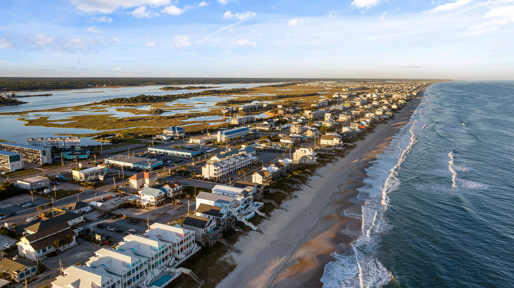

Indoor & Outdoor Activities
Find exciting things to do, including fishing, boating, sightseeing, shopping, and other activities around the area.
Explore ActivitiesExplore the Coast and Discover New Adventures

Welcome to my Local Guide for Morehead City, North Carolina! Located in Carteret County, Morehead City is a coastal town where visitors can enjoy beautiful waterfront views, outdoor adventures, and local restaurants.
I created this website for people who enjoy traveling to new destinations, exploring different places, and trying new experiences. Whether you enjoy spending time on the water, visiting local attractions, or discovering new foods, Morehead City has something to offer.
One of the things that makes Morehead City interesting is its coastal atmosphere. Visitors can walk along the waterfront, enjoy views of the water, explore local businesses, and experience the area's connection to fishing and seafood.
Find exciting things to do, including fishing, boating, sightseeing, shopping, and other activities around the area.
Explore ActivitiesDiscover local seafood restaurants, waterfront dining experiences, and places to enjoy a meal after exploring.
Explore Dining